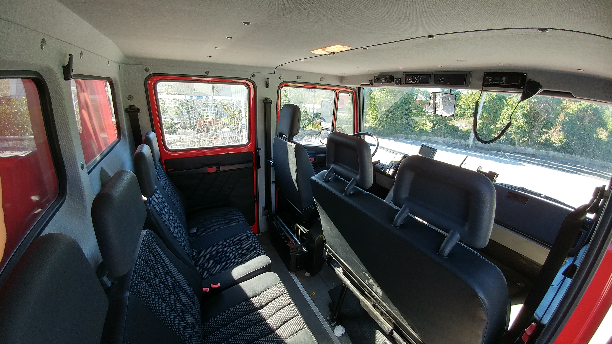
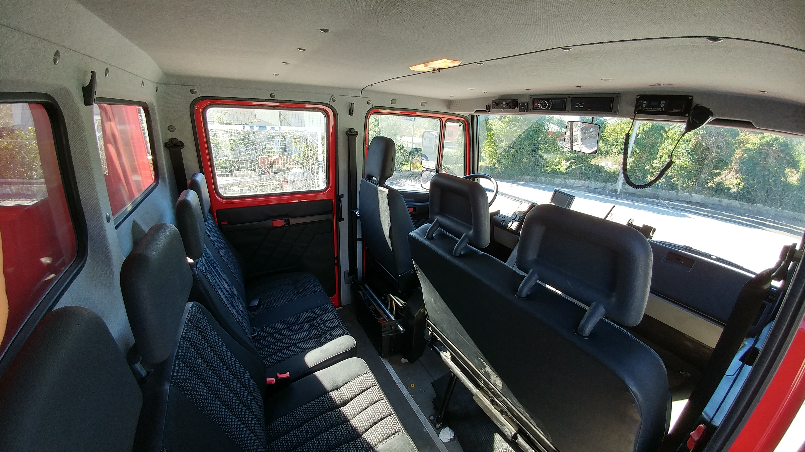
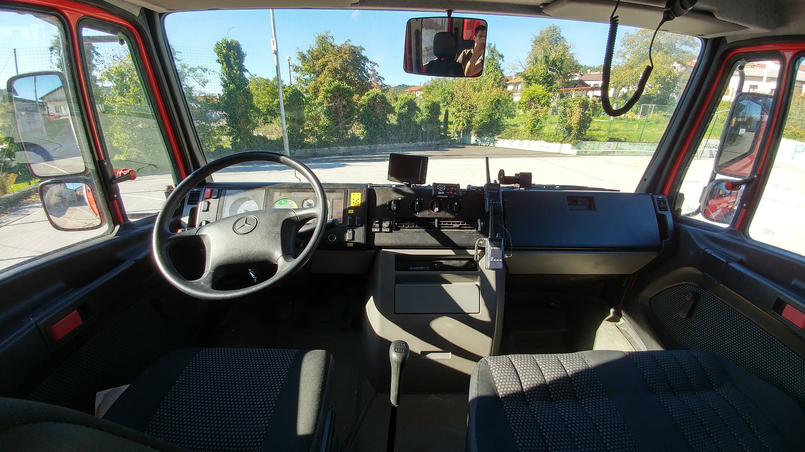
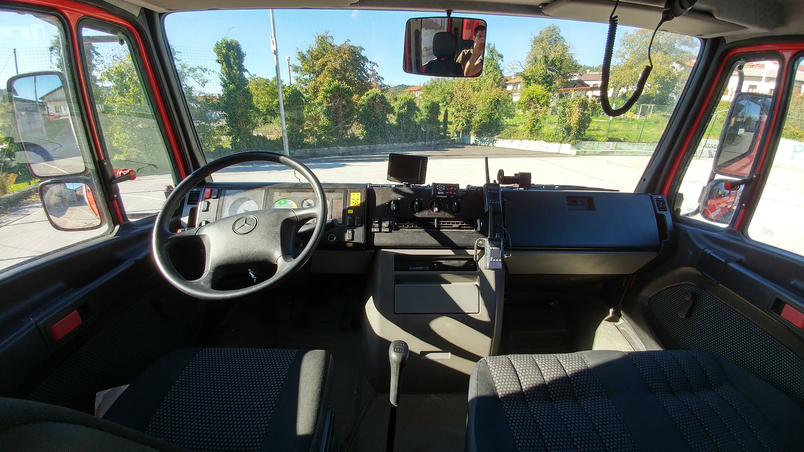
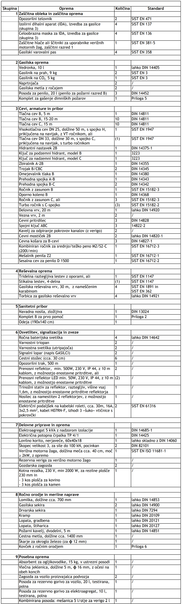
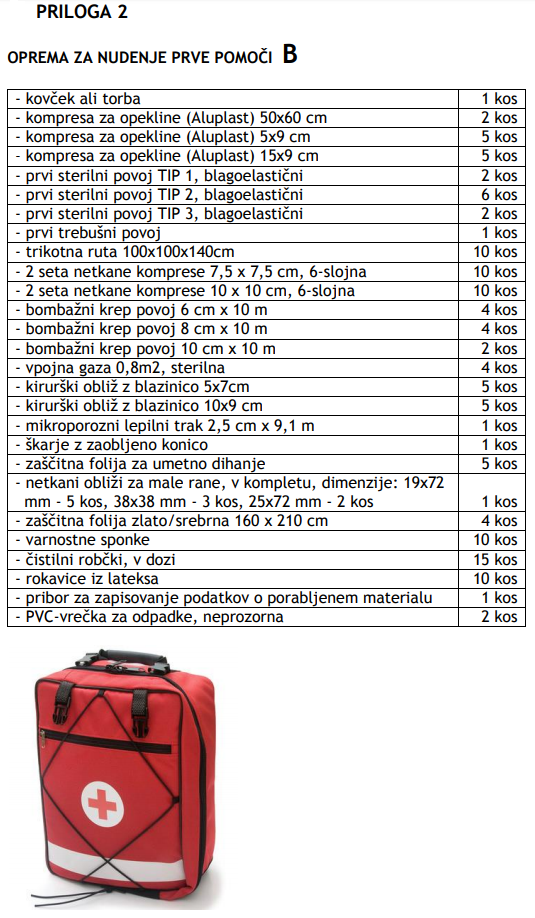
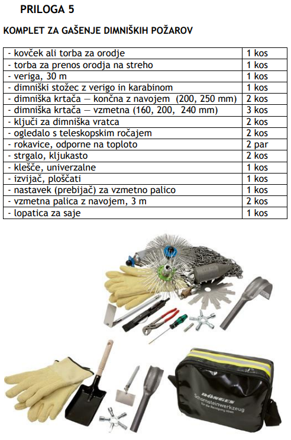
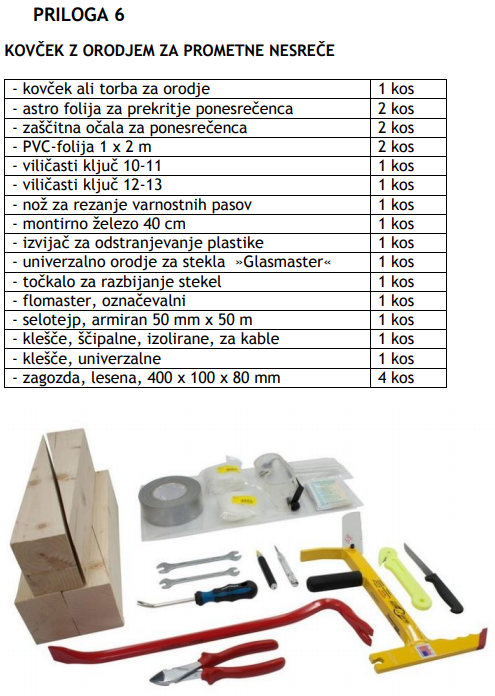

Večje gasilsko vozilo z vodo GVV-2 je vozilo z vgrajenim rezervoarjem za vodo volumna med 1000 in 1500 l ter gasilsko-tehnično opremo.
Uporablja se za gašenje požarov in za manjše tehnične intervencije.
Posadka vozila je zmanjšan oddelek 1+6.


 

 

| Brand | Mercedes Bnez |
| Model | Vario O 818 DA |
| Engine | OM904 LA.V/3 |
| Engine displacement | 4249 cm3 |
| Power | 130 kW/2200 rpm |
| Maximum speed | 140 km/h |
| Engine idle speed | 600 rpm (87 dB/A) |
| Maximum engine speed | 2740 rpm |
| Length | 6200 mm |
| Width | 2200 mm |
| Height | 2800 mm |
| Wheelbase | 3700 mm |
| Kerb Weight | 7445 kg |
Skupna masa vozila 7445 kg zadostujem pogojem GVV-2 zovila, saj je manjša od 11000kg.
Splošne tehnične zahteve, ki jih večje gasilsko vozilo GVV-2 izpolnjuje, so določene v standardih SIST EN 1846-1, SIST EN 1846-2 in SIST EN 1846-3.
Posebne izpolnjene tehnične zahteve so določene v standardu DIN 14530-5, razen za uporabo modrih luči in radijskih zvez.
Za podvozje smo uporabili vozilo, ki se prodaja kot gospodarsko vozilo. Glede na predvideno področje uporabe vozila smo izbrali 4x4.
Vozilo ima vgrajeno gasilsko centrifugalno črpalko, gnano preko motorja vozila. Vgrajena je skladno z določili standarda DIN 14420 in izpolnjuje določila razreda: FPN 10-1000 in FPH 40-250, skladno s SIST EN 1028-1,2 (nizkotlačna in visokotlačna črpalka).
V vozilo je vgrajen svetlobni stolp, s katerim je mogoče okoli vozla v vseh smereh razsvetliti bližnjo in daljno okolico. Sistem dviganja je pnevmatski. Vir energije za razsvetljavo, pa je elektroagregat.
Na levem in desnem boku ter zadnjem delu vozila so nameščena svetila za neposredno osvetlitev delovnih površin okoli njega.
Notranjost nadgradnje vozila je ustrezno osvetljena, da je omogočeno varno dostopanje, prevzemanje in vračanje opreme.
Nameščena oprema zadostuje zahtevam iz tabele.
   http://www.gasilec.net/uploads/datoteke/MarkoM/Tipizacija%20vozil_verzija%206_KONCNA_LEKTORIRANA.pdf
(25.9.2018)
http://tools.mercedes-benz.co.uk/current/vans/brochures/vario.pdf
(25.9.2018)